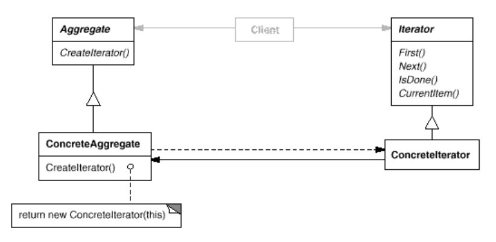

浅谈设计模式十一: 迭代器模式(Iterator)
Table of Contents
实例
为了提高市场竞争力，早餐店(Pancake House)和午餐店（Diner）合并了。如下整合他们的菜单让服务员使用。
PancakeHouseMenu 类使用 vector 来维护它的菜单，它认为使用 vector
可以很容易的扩展自己的菜单。
class PancakeHouseMenu { private: vector<MenuItem*> *menu_items_; };
DinerMenu 类使用数组来维护它的菜单，它认为使用数组能控制菜单数目和更快速的添加菜单。
class DinerMenu { public: enum { kMaxItems = 6 }; private: int number_of_items_; MenuItem *menu_items_[kMaxItems]; };
那么 Waitress 类需要使用两个循环分别访问它们的菜单来打印整个菜单。但问题是：
- 面向菜单的具体实现来编码而不是接口。
- 如果增加一个新的餐厅类，就需要另外一个循环，代码冗余，不易扩展。
Waitress需要知道每个餐厅类是如何内部表示它的菜单，破坏了它们的封装。- 如果餐厅类改变存储菜单的方式，比如由数组变成Hashtable，那么
Waitress需要很大的改动。
如何设计使得避免这些问题呢？
迭代器模式(Iterator)
目的
提供一种方法来序列访问一个聚合对象的元素，而不暴露它底层的实现。
实现
使用迭代起模式，分别创建餐厅类的迭代器类实现迭代起的抽象统一接口，餐厅类利用这个各自的迭代器类创建它的迭代器实例让调用者使用，调用者只需要这个迭代器实例就可以访问它的所有菜单。代码实例在这里。
定义迭代器抽象接口
class Iterator { public: virtual ~Iterator() {} virtual bool hasNext() = 0; virtual void* next() = 0; };
实现 DinerMenu 的迭代器类 DinerMenuIterator

class DinerMenuIterator : public Iterator { public: enum { kMaxItems = 6 }; DinerMenuIterator(MenuItem **items); virtual ~DinerMenuIterator(); virtual bool hasNext(); virtual void* next(); private: MenuItem **items_; int position_; }; bool DinerMenuIterator::hasNext() { if (position_ >= kMaxItems || items_[position_] == NULL) { return false; } return true; } void* DinerMenuIterator::next() { MenuItem* menu_item = items_[position_]; position_++; return reinterpret_cast<void*>(menu_item); }
实现 PancakeHouseMenu 的迭代器类 PancakeHouseMenuIterator
class PancakeHouseMenuIterator : public Iterator { public: explicit PancakeHouseMenuIterator(vector<MenuItem*> *items); virtual ~PancakeHouseMenuIterator(); bool hasNext(); void* next(); private: vector<MenuItem*> *items_; int position_; }; bool PancakeHouseMenuIterator::hasNext() { if (position_ >= items_->size() || items_->at(position_) == NULL) { return false; } return true; } void* PancakeHouseMenuIterator::next() { MenuItem *menu_item = items_->at(position_); position_++; return reinterpret_cast<void*>(menu_item); }
定义餐厅类抽象接口
每个餐厅都要完成创建自己的迭代器实例。
class Menu { public: virtual ~Menu() {} virtual Iterator* createIterator() = 0; };
DinerMenu 实现创建迭代器实例
Iterator* DinerMenu::createIterator() { return new DinerMenuIterator(menu_items_); }
PancakeHouseMenu 实现创建迭代器实例
Iterator* PancakeHouseMenu::createIterator() { return new PancakeHouseMenuIterator(menu_items_); }
Waitress 使用迭代器打印菜单
void Waitress::printMenu() const { Iterator *pancake_iterator = pancake_house_menu_->createIterator(); Iterator *diner_iterator = diner_menu_->createIterator(); cout << "MENU\n----\nBREAKFAST" << endl; printMenu(pancake_iterator); cout << "\nLUNCH" << endl; printMenu(diner_iterator); }
总的设计框架

总结
迭代器模式(Iterator)结构

组成
- 迭代器类（Iterator）定义一个接口来访问和遍历元素。
- 具体迭代器类（ConcreteIterator）
- 实现迭代器接口。
- 保存遍历聚合元素的当前位置
- 聚合类（Aggregate）定义一个接口来创建迭代器对象。
- 具体聚合类（ConcreteAggregate）实现迭代器创建接口来返回相应具体迭代器的一个实例。
应用场景
- 访问一个聚合对象的内容，但却不想暴露它的内部实现。
- 为聚合对象支持所有遍历方法。
- 为遍历不同的聚合结构提供一种统一的接口（即，支持多态迭代化）。